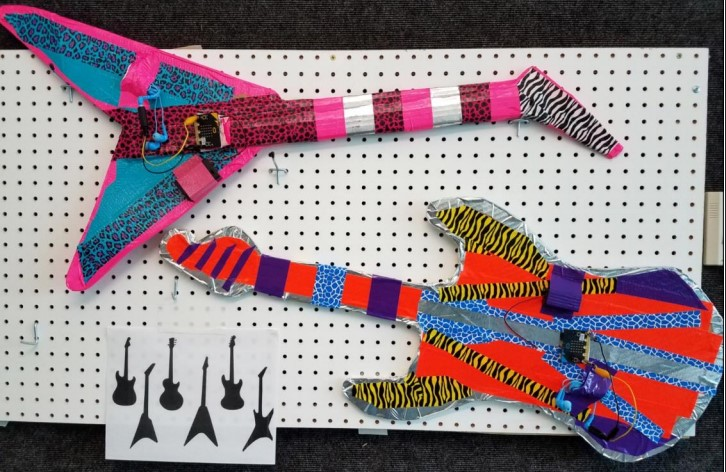

In 2022, we ran a virtual workshop combining making with computer science. We used design thinking, maker skills, and the micro:bit to create some fun projects, like making a micro:pet to making a musical instrument with a micro:bit.
 Guitar picture from the book Intro to CS with MakeCode for Micro:bit by Mary and Douglas Kiang.You'll get the tools and help you need to make your micro:bit projects (including your own micro:bit) and we'll be meeting in a fun virtual space in Gather Town!
CoderDojo Tucson is a dojo of the CoderDojo Foundation, which is part of the Raspberry Pi Foundation.